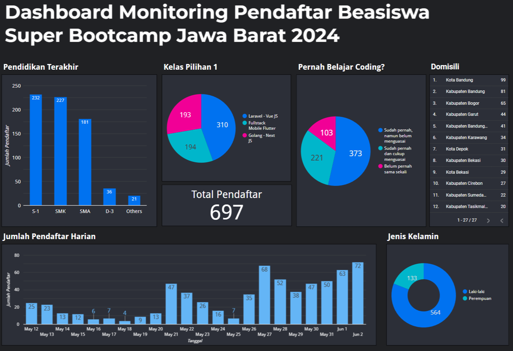
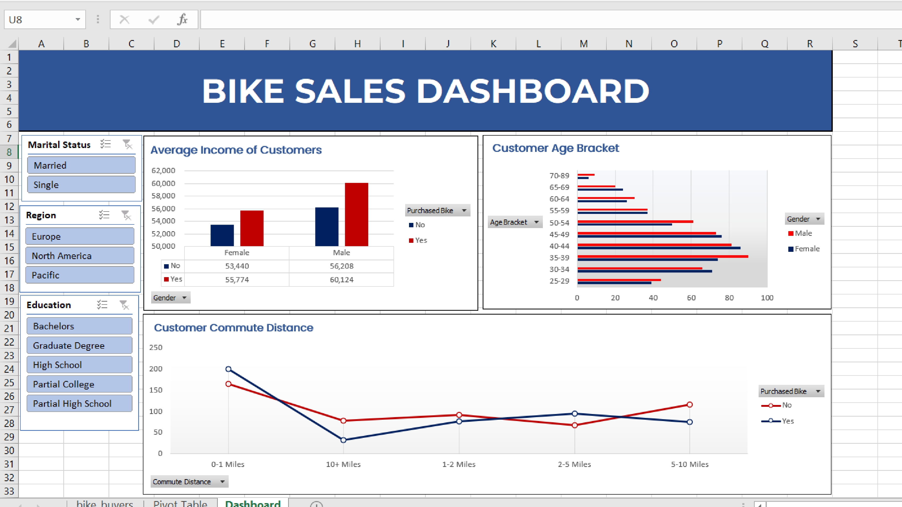
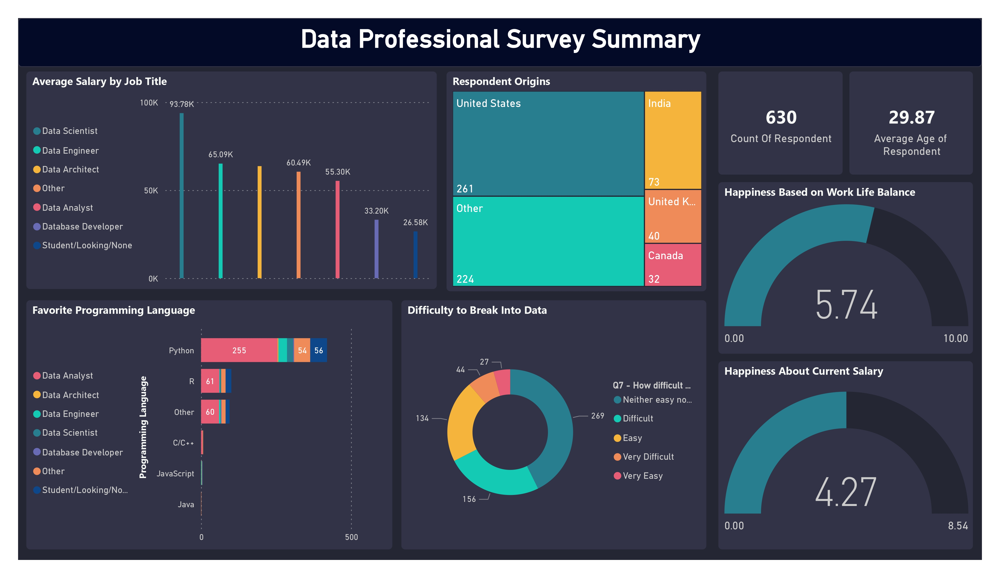
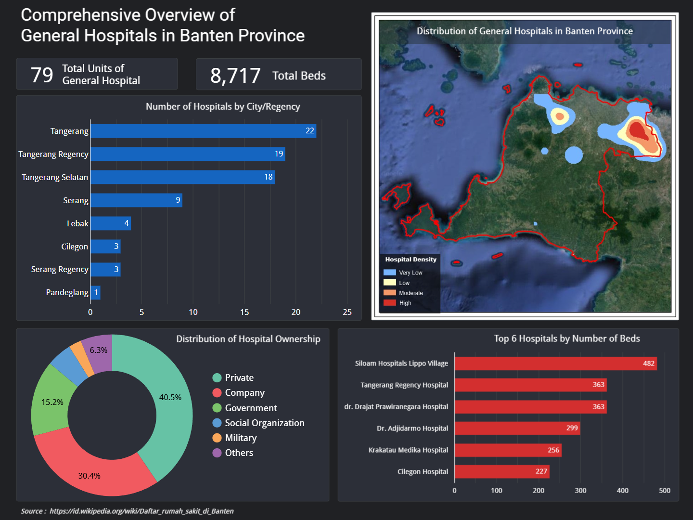

This project analyzes COVID-19 data using SQL, focusing on cases, deaths, infection rates, and
vaccination progress across different countries and regions. It includes detailed insights on
Indonesia, global trends, and the most affected areas. By using CTEs and temporary tables, the
analysis efficiently tracks data patterns and compares the impact of the pandemic worldwide.
This project focuses on cleaning and structuring real estate data in SQL. It includes handling missing property addresses,
splitting address fields, normalizing categorical values, removing duplicates, and dropping unnecessary columns. Techniques
like JOIN, SUBSTRING, PARSENAME, CASE, and CTEs are used to improve data quality and consistency for better analysis.
This project automates real estate data extraction from a Zillow clone website and inputs the collected information into a Google Form
using Selenium. BeautifulSoup is used to scrape property addresses, prices, and links, while Selenium handles form-filling and submission.
The script ensures smooth execution by implementing WebDriverWait for dynamic elements, error handling for robustness, and a loop to iterate
through multiple listings efficiently.

In this project, I deepened my knowledge of Excel by working with Pivot Tables, formulas, XLOOKUP, Conditional Formatting, Charts, and Data Cleaning.
Despite having prior experience with Excel, this course provided valuable insights that enhanced my skills. To apply these learnings, I created an interactive
dashboard using Microsoft Excel. I sourced datasets from Kaggle, cleaned and analyzed the data, and visualized key insights in a dynamic dashboard.

This project analyzes survey data from 630 data professionals, visualizing insights such as average salary by job title,
respondent demographics, favorite programming languages, and career difficulty using Power BI. The dashboard highlights
salary trends across roles, work-life balance satisfaction, and perceived challenges in breaking into the data industry,
offering a comprehensive overview of the data profession landscape.

This project visualizes the distribution of general hospitals in Banten Province using Looker Studio and ArcMap.
Spatial analysis in ArcMap highlights hospital density, while Looker Studio presents key insights such as hospital
ownership, distribution by city/regency, and top hospitals by bed capacity, providing a clear overview of regional
healthcare infrastructure.